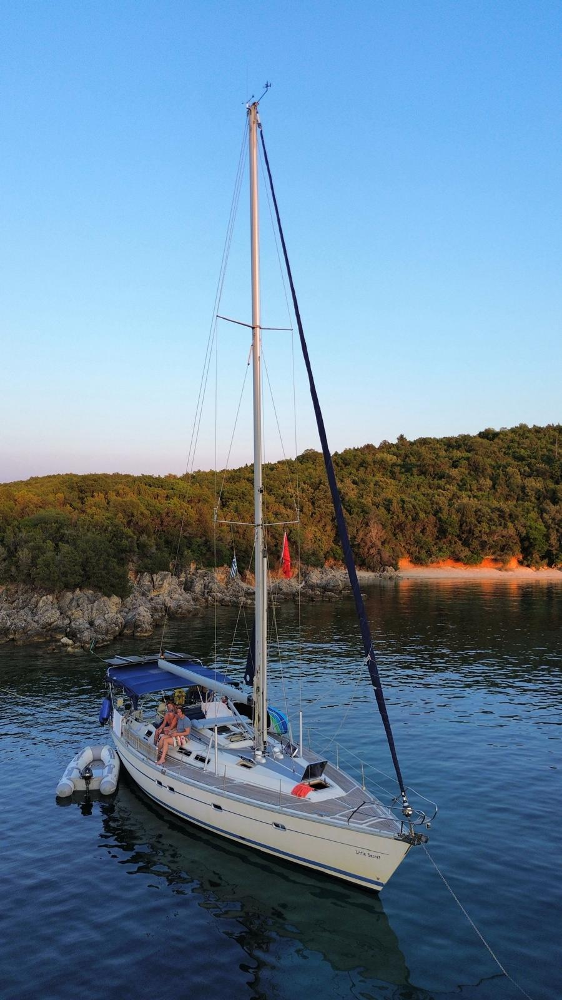
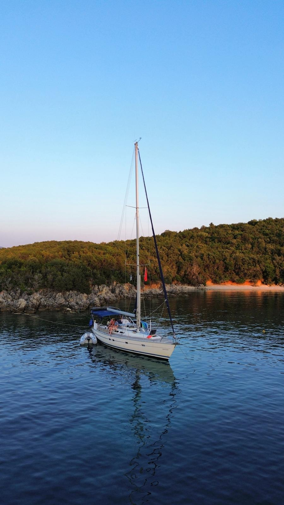
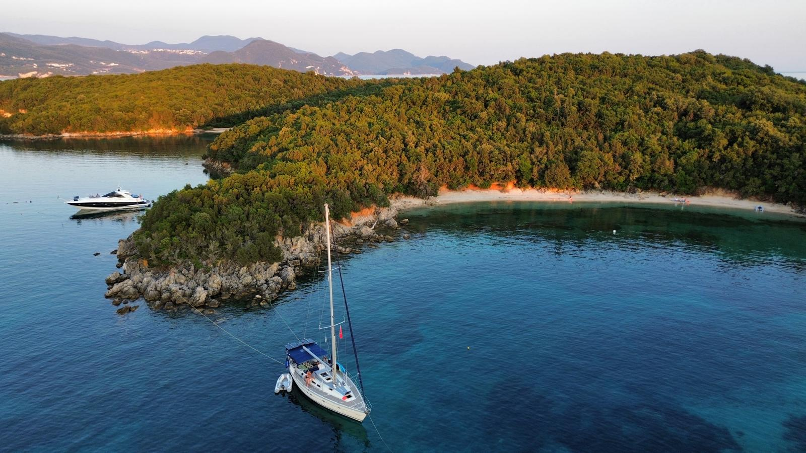
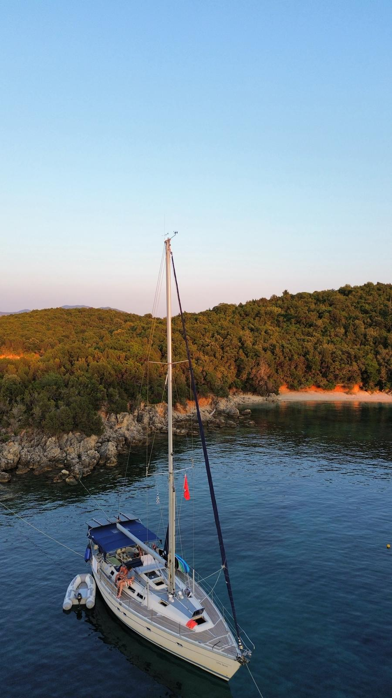
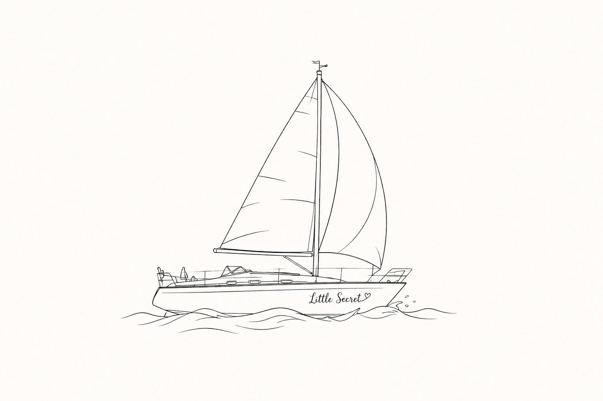

Die Yacht
Little Secret
Die Little Secret ist eine seegängige, komfortable Fahrtenyacht für entspannte Segelreisen, längere Etappen und persönliche Törns im Mittelmeer.
Fahrtenyacht
Gemacht für echte Törns
Die Little Secret ist für längere Strecken ebenso geeignet wie für gemütliche Ferientörns. Sie bietet genügend Platz an Deck, ein geschütztes Cockpit und eine praktische Ausstattung für Segelreisen entlang der Küste und zwischen den Inseln.
2026 führt die Route von Monfalcone über Split, Dubrovnik, Korfu und Athen bis nach Kos.
Schiffsdaten
Die wichtigsten Angaben zur Little Secret auf einen Blick.
NameLittle Secret
SchiffstypSegelyacht / Fahrtenyacht
MMSI211647520
RufzeichenDF8019
FlaggeDeutschland
AIS-TypSailing vessel
Längeca. 13 m
Breiteca. 4 m
Revier 2026Adria, Ionisches Meer, Ägäis
NutzungFerientörns, Meilentörns, Überführungen


Ausstattung
Navigation und Technik
Die Yacht ist für sichere Navigation und längere Etappen ausgerüstet. AIS und Live-Tracking ermöglichen es, die Position der Little Secret online zu verfolgen, sofern AIS-Abdeckung vorhanden ist.
- Plotter und elektronische Navigation
- AIS mit VesselFinder-Tracking
- UKW-Funk und Bordkommunikation
- Autopilot für längere Strecken
- Klassische Navigation als Backup
An Bord
Komfort und Leben an Bord
Die Little Secret ist keine anonyme Charteryacht, sondern eine persönliche Fahrtenyacht. Im Vordergrund stehen gemeinsames Segeln, entspanntes Bordleben, schöne Buchten und sichere Tages- oder Etappenplanung.
- grosszügiges Cockpit für die Crew
- Platz für gemeinsame Mahlzeiten
- geeignet für Küsten- und Inseltörns
- persönliche Atmosphäre statt Massentourismus
- flexible Etappen je nach Wetter und Crew


Ansichten der Little Secret
Weitere Eindrücke der Yacht und vom Segeln.






Für welche Törns eignet sich die Yacht?
Die Little Secret eignet sich für entspannte Urlaubstörns, Meilentörns, Etappenreisen, Skippertraining und Überführungen. Je nach Route stehen Segelerlebnis, gemeinsames Bordleben, Hafenmanöver oder die reine Strecke im Vordergrund.
FerientörnsEntspanntes Segeln mit Buchten, Häfen und Landgängen
MeilentörnsLängere Etappen zum Sammeln von Erfahrung und Seemeilen
SkippertrainingPraxis an Bord, Manöver, Planung und Sicherheit
ÜberführungenStreckenorientiertes Segeln mit klarer Routenplanung